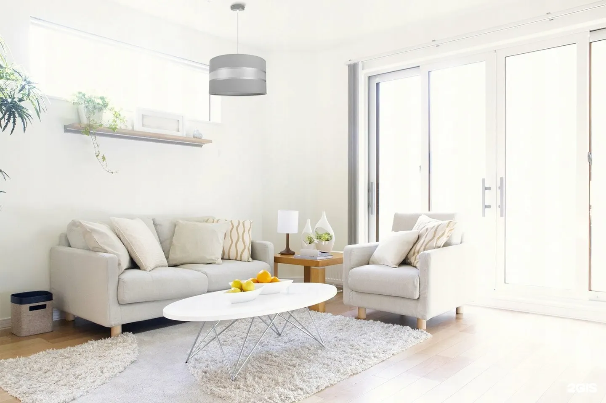
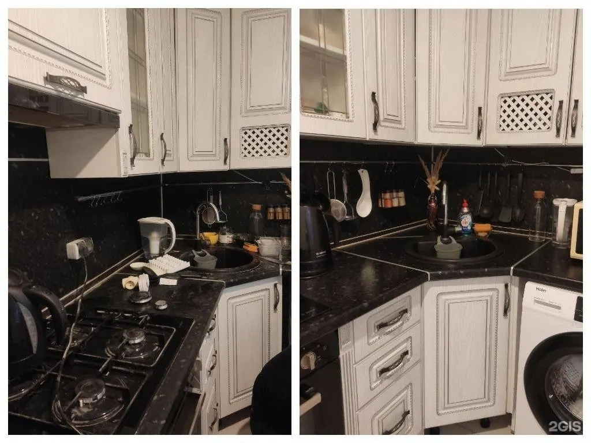
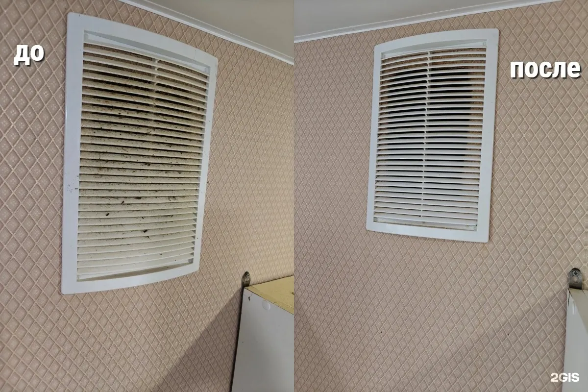
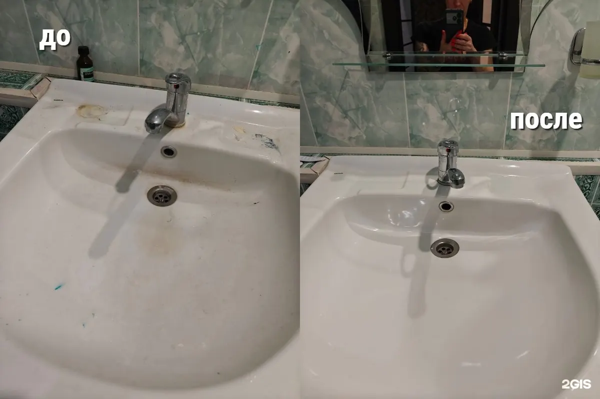

Клининг в Пензе
Уборка квартир и домов в Пензе
Генеральная уборка, уборка после ремонта и химчистка мягкой мебели и ковров. Специалист бесплатно приедет оценить объём работ.

- 5,0 в 2ГИС по 48 отзывам
- Бесплатный выезд на оценку
- Пн–пт 09:00–21:00
Цена по метражу
Цены за м² из карточки в 2ГИС. Точную сумму назовём после бесплатного осмотра.
Уборка, за м²
- Поддерживающаяповерхности, сантехника, полыот 60 ₽ за м²
- Генеральнаякухня, санузел, комнаты – до блескаот 100 ₽ за м²
- После ремонтапыль, следы краски и затиркиуточнить
Химчистка
- Мягкая мебельуточнить
- Коврыуточнить
Как заказать уборку
- 01
Напишите в Telegram
Площадь, вид уборки и удобный день.
- 02
Бесплатный осмотр
Специалист приедет и оценит фронт работ.
- 03
Уборка в назначенный день
Приезжаем со своими средствами и оборудованием.
- 04
Принимаете работу
Смотрите результат – потом оплата.



За что нас хвалят
Бесплатный осмотр
«Бесплатный выезд сотрудника на осмотр квартиры для оценки «фронта работ»» – Андрей Васильев.
Быстро и качественно
«Выполнили работу быстро и очень качественно» – Татьяна Сорокина.
Сложные случаи
Квартира после затопления, кухня после пенсионеров – справлялись.
Мебель и ковры
«Почистили мягкие кресла и ковер. Быстро, качественно» – Екатерина Ратникова.
Отзывы из 2ГИС
«Огромное спасибо Ларисе и ее команде за уборку коттеджа после отделки.Выполнили работу быстро и очень качественно.Буду вновь обращается за помощью в уборке. Рекомендую.»
Татьяна Сорокина · 12 апреля 2025
«Отличная клининговая компания! Очень порадовали: бесплатный выезд сотрудника на осмотр квартиры для оценки «фронта работ», лояльные цены и высокое качество предоставляемых услуг!»
Андрей Васильев · 3 февраля 2025
«Отличная работа, я в восторге. Почистили мягкие кресла и ковер. Быстро, качественно. Рекомендую 👍 обязательно буду обращаться ещё.»
Екатерина Ратникова · 27 ноября 2024
Отзывы с карточки в 2ГИС, без правок.
Контакты
- Адрес
- выезд по всей Пензе
- Часы
- Пн–пт 09:00–21:00
- Телефон
- +7 927 367-32-35